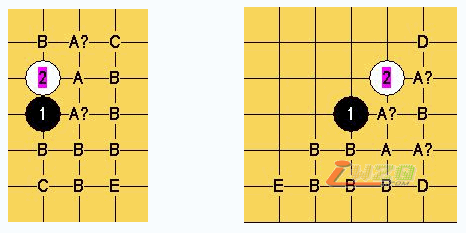

《天涯论棋》之开局优劣的结论
#1 《天涯论棋》之开局优劣的结论 作者：有志青年 发表时间：2008-4-3 7:24:40
现有规则下的26个开局，经人们多年的实战和研究，已取得许多的突破。下面两个图是本人汇整的优劣判断结论，其中的标志表示如下：A黑必胜，B黑优，C黑白均衡，D白优，E白必胜，A？表示已有必胜的论断，因本人还没有完成最后的终结，不敢妄下结论

花月、蒲月是公认的黑必胜，本人已经完成了花月的彻底终结，蒲月的也指日可待。
游星、彗星是公认的白必胜，本人已经完成了游星的彻底终结，彗星的（只有一个5无法白必胜）还差最后的校验。
云月、水月的黑必胜已经基本成为共识，但是网上传播的各种终结谱都还有不少漏洞，特别是水月似乎问题还挺大。
雨月黑大优，虽然与云月相似，但由于盘端问题的存在，似乎暂时还无法象云月那样走向黑必胜。
溪月、峡月的黑必胜是上海顾伟的研究结论，前些日子我做过彻底终结的尝试，仅完成了弱防的80%和强防的60%，就暂时停止了，感觉难度非常大，是否真的必胜，愿意相信但不敢确信。
寒星、恒星黑大优，都只剩寒恒互通的那个变化，黑优难胜。
金星、新月都有黑必胜的传言，但是没有看到令人信服的谱，我更愿意把黑必胜的传言视为良好的愿望。
名月黑大优，接近必胜，近来在网络上大热，比赛中也时有出现，很多研究高手联手攻关，据说已经解决了最强防，仅剩若干个较强防无法解决，但愿很快就能看到它彻底解决的一天。
松月黑大优，本来这个算经典的平衡开局，因为李洪斌解决了天地止1打的黑必胜，激起了人们极大的兴趣，三打黑必胜的传言一度很盛，其解决者是老牌世界冠军ANDO、新科世界冠军TANK到俄罗斯棋手的集体研究，甚至说是我longzeng的各种版本都有，让人不敢再开松月局，但是一直没有谁真的走出了必胜招，近来开松月的又逐渐多起来了。
岚月黑大优，2004年上半年的研究热门，N多与其他开局的通型让人乐此不疲，后来进展并不明显，热度才慢慢降下去。
斜月、丘月黑优，历来是热门，实战出现的频率非常大，虽然时有黑必胜的戏言，但是其主要定式变化一点一点地趋于了平衡，说不定今后会步瑞星的后尘成为必和的代名词。
明星、山月、银月黑优，这几个开局淡出人们的视野多时，我自己也研究不多，不好如何评价。
残月黑优，有人研究认为是白优，还有人却说找到了黑必胜，我个人认为黑应该还是略微占点优，但是在实战中非常难以把握。
疏星、瑞星是经典的平衡开局，目前还没有谁提出新的挑战意见。但是这两个开局目前的待遇却大相径庭——瑞星几乎成为必和的代名词，弱手或一心求和的棋手总爱开这个开局，结果往往也不让他们失望：而疏星却由于存在的未知变化较多，在实战中往往更容易分出胜负，出人意料地成为不少棋手争胜的法宝。
流星白优的结论深入人心，虽然近段很少有新的研究成果出来，但是我相信随着可下的局面越来越少，它完全有可能成为大热门。
长星我有过相当深入的研究，我一度把它视为黑白平衡，但是更进一步的研究表明，白的优势仍然非常可怕，或许最终白必胜也未可知。
#2 Re:《天涯论棋》之开局优劣的结论 作者：天上人间12 发表时间：2008-4-13 10:28:29
这样实在是不利于发展。
#3 Re:《天涯论棋》之开局优劣的结论 作者：我爱棋 发表时间：2008-7-4 18:57:55
浦月的已经终结了，也挺多的#4 Re:《天涯论棋》之开局优劣的结论 作者：菜巫妖 发表时间：2008-7-5 13:33:35
哪里有这种必胜的棋谱啊？